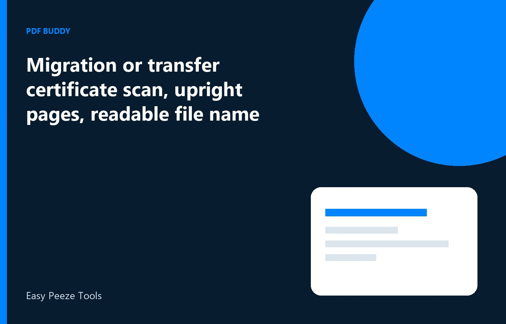

A migration certificate or transfer certificate is one or two pages with a seal, a university name, and a date that admissions desks read quickly. Students send a sideways phone photo, a crop that slices the seal, or a file called scan.pdf, and the portal marks it unreadable. On Windows, make an upright PDF of the full page, name it with the university and the year, and keep a copy after you upload. This is your own certificate. Do not edit the dates, the marks, or the seal. If the page is damaged, ask the university for a fresh issue.
Scan the full page, including the seal
Place the certificate flat and include every edge. Seals and serial numbers sit in corners, and a tight crop removes the part the verifier checks. Use even light so the embossed seal still shows as a mark, not a white hole. If there is a second page or a backside endorsement, scan it next, in order. Turn the images into PDF pages on the PC. A single photo of both pages on the table is harder to read than two pages. Give each side its own page.
Read the candidate name, the programme, and the certificate number from the PDF, not from the paper beside it. The upload is the PDF. If a word is lost in a crease, rescan. Do not trace the letters over the image. A darkened seal is still the university's seal. A drawn circle is not. If the office gave you a digitally signed PDF, use that file and do not print and scan it. The digital signature is easier to trust than a photo of a print.
- All four edges and the seal in the frame
- Back side included when it has an endorsement
- Certificate number readable at normal zoom
- Digital original preferred over a photo of a print
Turn sideways pages upright
Phone scans often land in landscape because the certificate was wider than the frame. Rotate each page until the heading reads left to right in the normal upright way. Then export. Admissions staff will not rotate a dozen files by hand, and some portals flag mixed orientation as a bad upload. Check the preview the portal shows after you attach the file, not only the preview on your PC. They can differ if you attached the raw photo by mistake.
Do not stretch the page to fill a square. Keep the proportions. A stretched seal looks altered even when you only meant to fit a form. Margins can be white. White margins are better than a cut serial number. If the file is over the portal size cap, compress after the rotation, then read the certificate number again. Stop compressing while the number is still crisp. A readable number beats a smaller file.
A file name that says what it is
Use the document and the university, such as Migration-Mumbai-University-2026.pdf or TC-SchoolName-2026.pdf. Your own name can be included if the form does not forbid it and you are comfortable with that name in a mail. Avoid doc.pdf and image-final.pdf. If you apply to several colleges, keep one master file and copy it. Do not let each application folder hold a different crop. When a college asks for a clearer scan, replace the master and note the date, so you do not resubmit the blurry file from an old mail.
If the instructions want the migration certificate and the marksheet in one PDF, merge them in the order written, after each is upright. If they want separate slots, do not merge. A combined file in the wrong slot is a common incomplete status. Name a merged file so it lists both documents. People open the wrong PDF when everything is called certificates.pdf. Include the year so a later scan does not replace it.
Keep a home copy after the upload
Universities and employers ask again. Store the PDF in a folder for that qualification, next to the marksheet, and keep a second copy on a drive you control. Portal accounts close. Pdf Buddy can rotate the pages, export the PDF, and compress it on the PC. You do not need to send the certificate to a random enhancer site to make the seal darker. A better photo is the right fix.
You are submitting a certificate the institution issued, for an admission or a job you are allowed to seek. If the name on it does not match your current ID, follow the university's correction process. Do not patch the name in the PDF. A corrected official certificate replaces the page. The edited image should not. Wait for the fresh certificate and scan that page instead of painting letters on the old one.
Questions people actually ask
The seal is in the corner and my crop almost cuts it. Should I submit anyway? Rescan with the full page in the frame, including the seal and the serial number. A partial seal is a common reason the file is marked unreadable. White margin around the page is acceptable. A missing corner is not. Submit the full page.
The certificate photo is landscape. Will the university portal rotate it? Do not rely on that. Rotate the page upright on your PC, save the PDF, and check the portal preview after you attach it. Mixed or sideways pages are a frequent reject even when the text is sharp. Fix it before the first upload.
They want the transfer certificate and the marksheet together. How do I do that without losing the originals? Rotate each file first, merge a copy in the order the instruction lists, and keep the separate PDFs. Upload the merged copy only in the slot that asked for both. Leave the originals named on their own. Do not throw the parts away.
Export an upright certificate PDF on the PC and keep that file after you upload. Pdf Buddy, by Easy Peeze Tools, is a Windows desktop PDF editor that works on the PC. The scan is not uploaded to a random website. The free tier is 2 files a day. Pricing starts at ₹149. Use pricing.